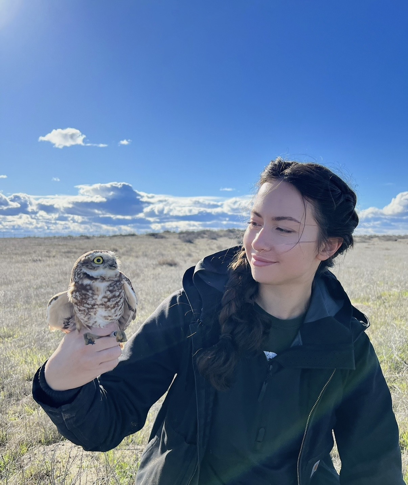
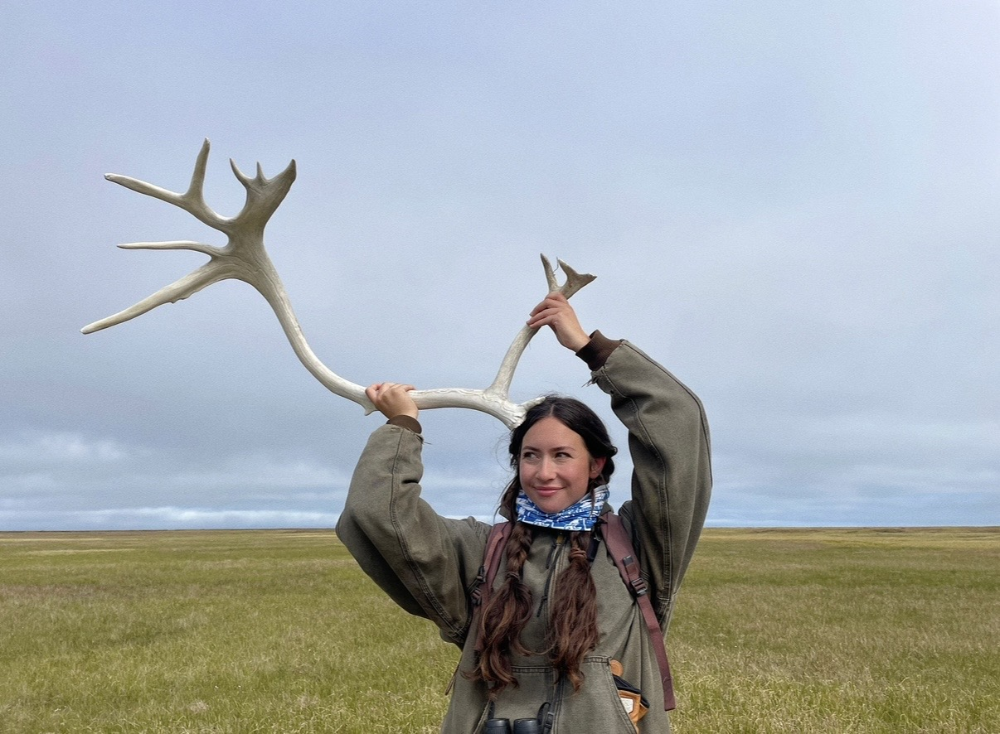
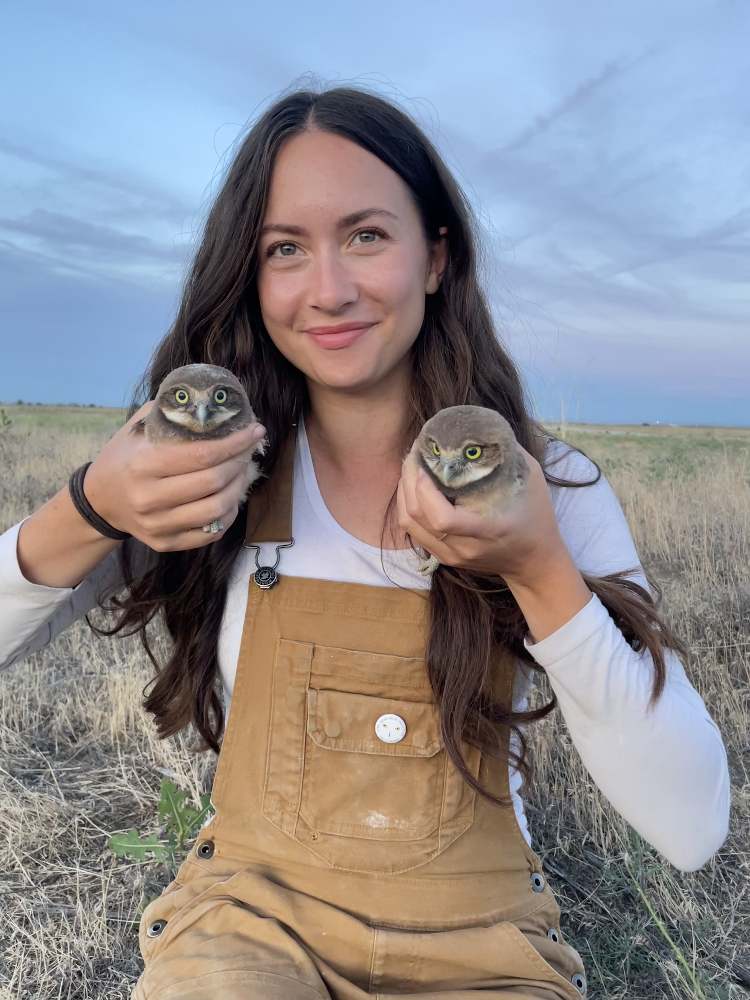
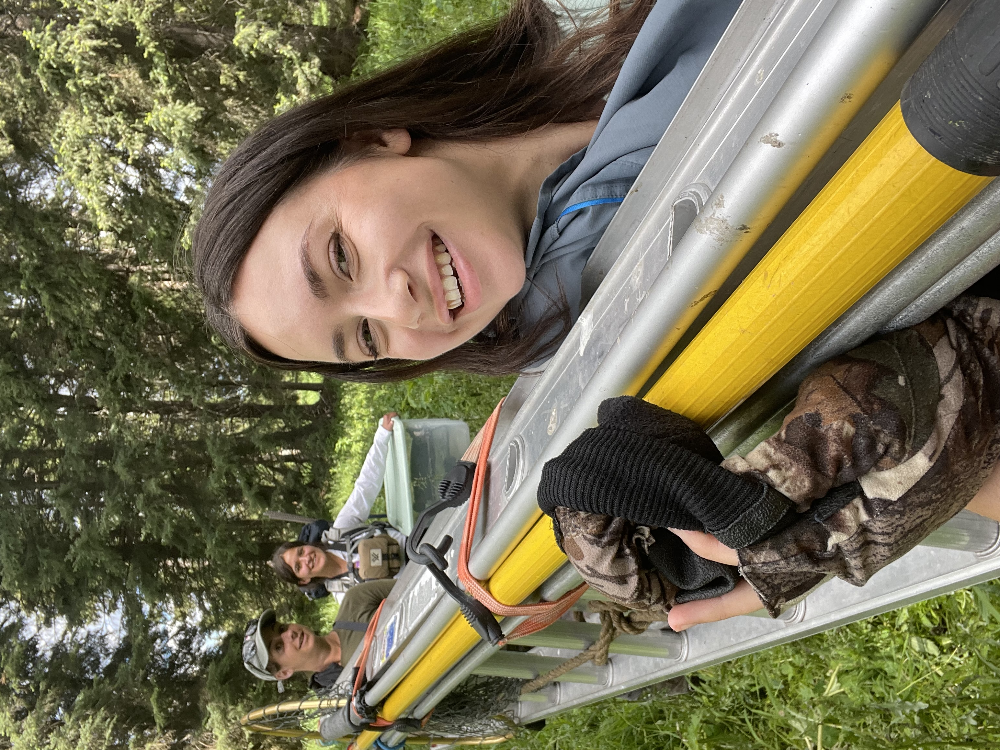
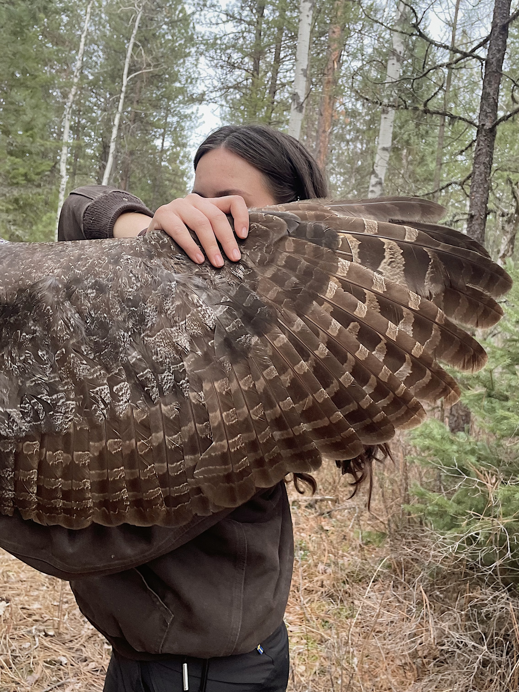

Field biologist, raptor enthusiast,
and conservation advocate.
I am an MSc student in Raptor Biology at Boise State University, working in the Quantitative Conservation Lab under the supervision of Dr. Jen Cruz. My research sits at the intersection of population ecology, conservation science, and statistics.
Understanding how a rapidly changing world impacts wildlife species and their habitats is crucial for conserving populations and reversing biodiversity loss. I use a combination of statistics and boots-on-the-ground field work to understand how wildlife responds to environmental change. Specifically, my work focuses on the population ecology of raptors, examining the demographic processes that shape their persistence.
I am passionate about bridging rigorous science with public engagement and believe strongly that science is for everybody. Over the years, I've led educational field outings for community members and students, bringing over 120 people into the field to experience wildlife research up close. I have also personally mentored over 15 trainees in field methods and raptor banding. Additionally, I have created educational videos, blog posts, and maintained live wildlife cameras for public enjoyment, education, and engagement.
Before graduate school I earned my BSc in Biology from Portland State University and spent a handful of years bopping around the country as a wildlife field technician.
Research interests
Field Life
Boots on the Ground





